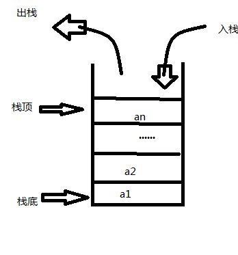
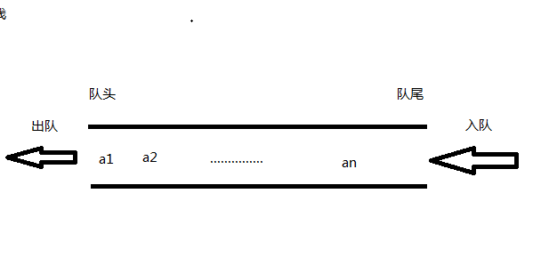

栈和队列
第三章 栈和队列
一、栈
栈（stack）是限定仅在队尾进行插入或删除操作的线性表。
线性表的尾端为栈顶，表头为栈底。
特点：栈是LIFO（Last In First Out），先存进去的数据只能最后被取出来，进出顺序逆序，即先进后出，后进先出。

栈的表示和实现（top、base、为空或满的判断条件、元素个数）
- 顺序栈
1 | //-------栈的顺序存储表示--------- |
链式栈
1
2
3
4
5
6
7
8
9
10
11//------------链式栈的存储结构----------
teypedef struct StackNode
{
ElemType data; // 存放栈的数据
StackNode *next;
} StackNode, *LinkStackPtr;
teypedef struct LinkStack
{
LinkStackPrt top; // top指针
int count; // 栈元素计数器
}栈的相关应用
3.1 数制转换
1
2
3
4
5
6
7
8
9
10
11
12
13
14
15
16
17
18//对于输入任意的一个非负十进制整数，打印输出与其等值的八进制数
void Conversion()
{
SqStack S;
InitStack(S);
int e, Num;
scanf_s("%d", &Num);
while (Num) {
Push(S, Num % 8);
Num /= 8;
}
while (!StackEmpty(S))
{
Pop(S, e);
printf("%d ", e);
}
printf("\n");
}3.2 括号匹配的检验
1
2
3
4
5
6
7
8
9
10
11
12
13
14
15
16
17
18
19
20
21
22
23
24
25
26
27
28
29
30
31
32
33
34
35
36
37
38
39
40
41
42
43int Match(char ch, char str) {//检查是否匹配
if (ch == '('&&str == ')') return TRUE;
if (ch == '['&&str == ']') return TRUE;
if (ch == '{'&&str == '}') return TRUE;
return FALSE;
}
void BracketMatch(char *str) {//str为输入的字符串
char ch;
int i = 0;
SqStack S;
InitStack(S);
while (str[i] != '\0')
{
switch(str[i])
{
case '(':
case'[':
case'{':
Push(S, str[i]);
break;
case')':
case']':
case'}':
if (StackEmpty(S)) {
printf("括号不匹配！\n");
return;
}else {
GetTop(S, ch);
if (Match(ch, str[i]))
Pop(S, ch);
else {
printf("括号不匹配！\n");
return;
}
}
}
i++;
}
if (StackEmpty(S))
printf("括号匹配\n");
else
printf("括号不匹配！\n");
}3.3 行编辑程序算法实现（部分）
1
2
3
4
5
6
7
8
9
10
11
12
13
14
15
16
17
18
19
20
21
22
23
24
25//在终端窗口有一新行，没有输入内容，输入Ctrl+D表示EOF
//在终端窗口有一新行，有输入内容，按两次Ctrl+D表示EOF
void LineEdit()
// 利用字符栈，从终端接收一行并传送至调用过程的数据区
{
SqStack S;
InitStack(S);
char c, ch = getchar();
while (ch != EOF)
{
while (ch != EOF && ch != '\n') {
switch (ch)
{
case'#':Pop(S, c); break; //前一个元素输入错误，想要删除
case'@':ClearStack(S); break; //当前错误过多，删除整行
default:Push(S, ch); break; //存入栈
}
ch = getchar();
}
StackTraverse(S, visit);
ClearStack(S);
if (ch != EOF) ch = getchar();//如果行没结尾，则直到读到结尾
}
DestroyStack(S);
}
二、队列
队列（queue）是限定仅在表头进行删除，表尾删除操作的线性表。
特点：先进先出（FIFO）

循环队列（front、rear、为空或满的判断条件、元素个数）
与顺序栈类似，在队列的顺序结构中，除了用一组地址连续的存储单元依次存放从队列头到队列尾的元素之外，尚需附设两个指针front和rear分别指示队列头元素及队列尾元素的位置。

用此方法表示循环队列，就无法用Q.front=Q.rear来判断队列空间是空还是满。可有两种处理方法：其一是另设一个标志位以区别队列是空还是满；其二是少用一个元素空间，约定以“队列头指针在队列尾指针的下一位置上”作为队列呈满状态的标志。
从上述分析可见，C语言中不能用动态分配的一维数组来实现循环队列。如果要用，就必须为它设定一个最大队列长度；若无法预估所用队列的最大长度，建议使用链队列。
描述：
1 | 初始化建空队列时，令front=rear=0 |
实现代码：
1 |
|